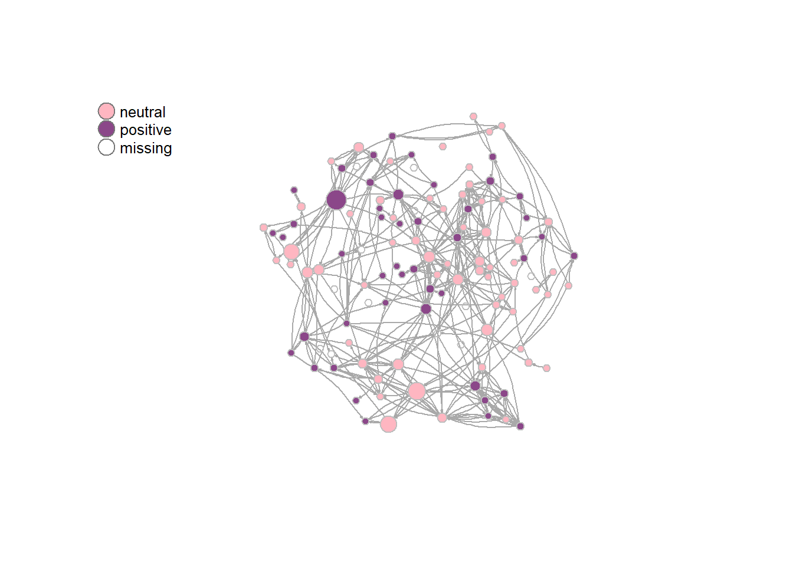
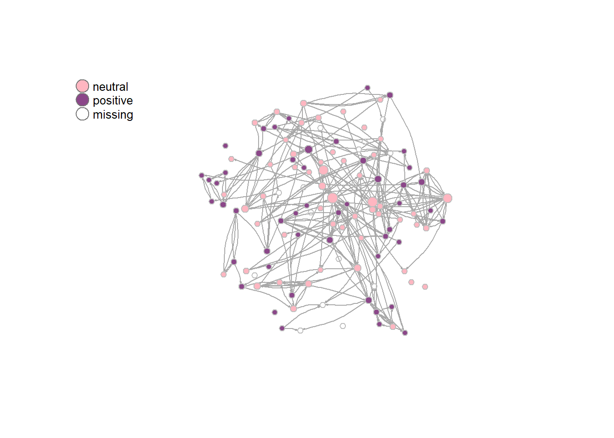

For the descriptive analyses, patterns in the networks of students in Michigan learning communities will be examined. Before calculating segregation measures, this paper will first look into some other descriptive statistics for the networks, to get a better feel for the data. To this end, this chapter starts with visualisations of the data, after which ‘classic’ network statistics will be calculated, for example about the density and reciprocity of the network. This all builds up to a better understanding of the final measure for segregation with regards to civic engagement, which will be used to answer RQ1.
rm(list = ls())
load("./data/IndividualCharacteristics.RData")
load("./data/NetworkCharacteristics.RData")
load("./data/CivicAttitudes.RData")For the data visualisation, the variables were constructed as described in the ‘data’ chapter. However, additionally, the variable for civic attitudes was dichotomised, to create a clear distinction between people who hold neutral and people who hold positive attitudes. This allowed me to more easily spot potential clustering in the network. The cut-off point for neutral vs. positive attitudes was based on the mean score on the civic attitudes scale. For both waves, the average value was around 5, thus 5 was chosen as a cut-off point.
hanging_df_t1 <- as.data.frame(hanging[[1]][1])
strong_netw_t1 <- data.matrix(hanging_df_t1)
strong_netw_t1[strong_netw_t1==9]<-NA
hanging_df_t2 <- as.data.frame(hanging[[1]][2])
strong_netw_t2 <- data.matrix(hanging_df_t2)
strong_netw_t2[strong_netw_t2==9]<-NA
IC_df <- as.data.frame(T1civeng[[1]])
IC_df$missings <- rowSums(is.na(IC_df))
IC_df$ce_t1 <- ifelse(IC_df$missings <= 1, rowMeans(IC_df[,1:4]), NA)
IC_df2 <- as.data.frame(T2civeng[[1]])
IC_df2$missings <- rowSums(is.na(IC_df2))
IC_df2$ce_t2 <- ifelse(IC_df2$missings <= 1, rowMeans(IC_df2[,1:4]), NA)IC_df$ce_t1_cat <- cut(IC_df$ce_t1,
breaks = c(0, 5, 7),
labels= c('neutral', 'positive'))
IC_df2$ce_t2_cat <- cut(IC_df2$ce_t2,
breaks = c(0, 5, 7),
labels= c('neutral', 'positive'))For the data visualisation, the R-package igraph was used, in combination with the base-function ‘plot’. As the data contained information on directed relationships, these were modeled as such. For both graphs, the position of the nodes were kept stable, to show the changes in ties. To accomplish this, the Davidson-Harel layout algorithm was used. This algorithm puts closely connected nodes close to each other, while pushing the lesser connected nodes to the outside (Stulp, n.d.). Importantly, this algorithm does keep isolated nodes within the network, rather than creating a ring outside of it. As I used the same layout for both Wave 1 and Wave 2, this ensured that there are no unreasonably long ties, when isolates in Wave 1 get ties in Wave 2. This algorithm also minimises the amount of overlap between the nodes. Furthermore, the graphs represent nodes with neutral attitudes as ‘pink’ and people with positive attitudes as ‘purple.’ Lastly, the size of the nodes is dependent on density. This was done to examine whether people with more positive attitudes may have more ties than others.
copy_strong_netw_t1 <- strong_netw_t1
copy_strong_netw_t1[is.na(copy_strong_netw_t1)] <- 0
g_strong_t1 <- igraph:: graph_from_adjacency_matrix(copy_strong_netw_t1, mode = "directed")
graph_CE_t1 <- simplify(g_strong_t1)layout <- igraph:: layout_with_dh(graph_CE_t1)Figure 4 shows the visualisation of the network in Wave 1. Visually, the network does not seem very segregated with regards to civic attitudes, as the pink and purple nodes are mixed throughout the network. There are no clear clusters of only (or mostly) pink nodes or only (or mostly) purple nodes. This is an indication that people do not tend to interact with others with similar civic attitudes. This graph also showcases the betweenness of the different nodes. Most nodes with a relatively high betweenness (bigger node size) have neutral civic attitudes, with one exception, where the node with the highest betweenness has positive civic attitudes.
Figure 4.
Visualisation of the network of a Michigan learning community in Wave 1
colour <- ifelse(IC_df$ce_t1_cat=='neutral', "lightpink", "orchid4")
V(graph_CE_t1)$size = igraph:: betweenness(graph_CE_t1, normalized = T, directed = T) * 50 + 5
plot_CE_t1 <- plot(graph_CE_t1,
vertex.color = colour,
vertex.frame.color = "gray",
edge.curved = 0.2,
edge.arrow.size = 0.1,
vertex.label = NA,
layout = layout)
legend("topleft", c("neutral", "positive", "missing"), pch = 21, col = "#777777", pt.bg = c("lightpink", "orchid4", "white"), pt.cex = 2,
cex = 0.8, bty = "n", ncol = 1)
copy_strong_netw_t2 <- strong_netw_t2
copy_strong_netw_t2[is.na(copy_strong_netw_t2)] <- 0
g_strong_t2 <- igraph:: graph_from_adjacency_matrix(copy_strong_netw_t2, mode = "directed")
graph_CE_t2 <- simplify(g_strong_t2)Figure 5 shows the same network, but a few months later in Wave 2. Seemingly, the density has decreased between Wave 1 and Wave 2, as the amount of ties has visually decreased, and the amount of nodes with a high degree of betweenness has also decreased, because there are fewer big nodes. With regards to the degree of segregation of civic attitudes, Wave 2 may give the indication of a slightly higher degree of segregation, with small ‘clusters’ of purple appearing in the middle left and bottom right. However, this is not immediately apparent, and the network seems to be mostly very mixed with regards to civic attitudes. Especially the cluster on the bottom right is dubious, as the nodes’ attitudes have remained the same between Waves 1 and 2, the only thing that has changed is that nodes who were neutral in Wave 1, did not have a valid score in Wave 2. This can therefore not be seen as proof of segregation.
Figure 5.
Visualisation of the network of a Michigan learning community in Wave 2
colour <- ifelse(IC_df2$ce_t2_cat=='neutral', "lightpink", "orchid4")
V(graph_CE_t2)$size = igraph:: betweenness(graph_CE_t2, normalized = T, directed = T) * 50 + 5
plot_CE_t2 <- plot(graph_CE_t2,
vertex.color = colour,
vertex.frame.color = "gray",
edge.curved = 0.2,
edge.arrow.size = 0.1,
vertex.label = NA,
layout = layout)
legend("topleft", c("neutral", "positive", "missing"), pch = 21, col = "#777777", pt.bg = c("lightpink", "orchid4", "white"), pt.cex = 2,
cex = 0.8, bty = "n", ncol = 1)
Comparing the two graphs does not immediately indicate a clear conclusion with regards to the degree of segregation in the networks. It seems limited in both waves, however, the network did go through a lot of changes in between the two waves. A lot of new ties seemed to have been created, and a lot have seem to be broken. [PLACE SOMEWHERE ELSE] –> therefore, it is still possible that micro-processes based on civic attitudes have taken place, without them being visible on a macro scale.